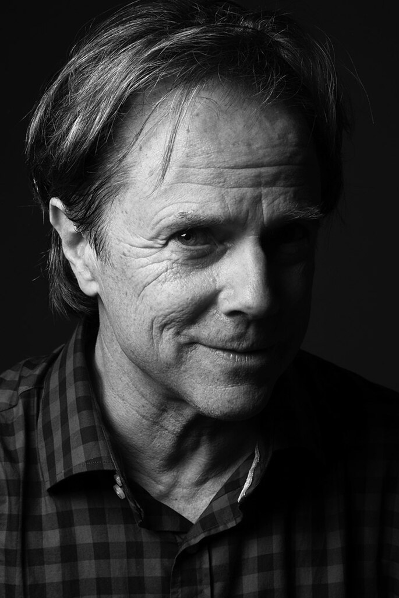
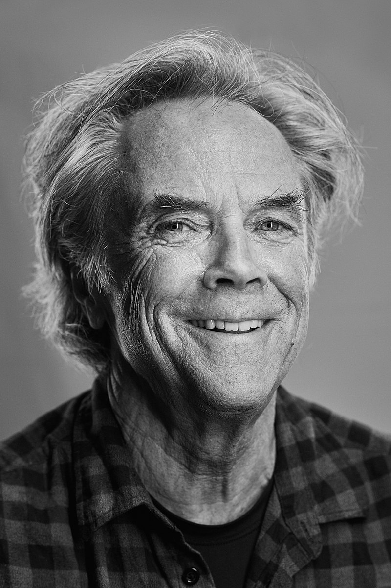
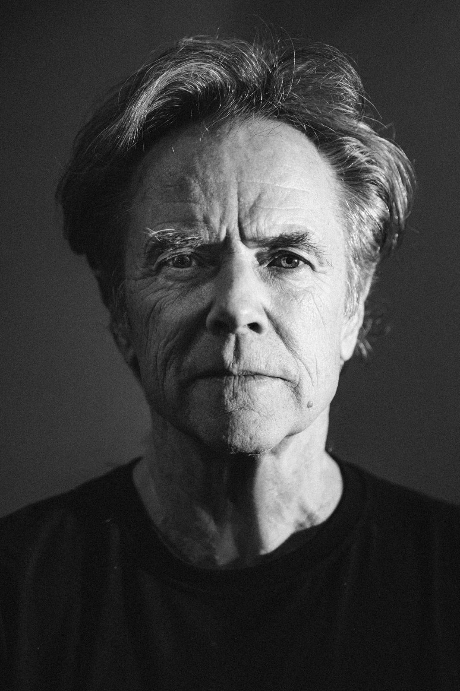

David Carson

“
직관
”
INTUITION
그는 자신을 한마디로 표현해 달라는 질문에 위와 같이 대답하였다. 그리고 그 직관은 교육될 수 없다고 말했다.
일상에서 항상 사진을 찍어 자신의 삶을 디자인에 반영하는 데이비드 카슨은 커뮤니케이션에 있어 자신의 내면에 소리에 귀기울이라 했다. 직관을 믿고, 내가 받은 느낌을 어떻게 전달할지 고민하라 했으며 디자인이란 결국 자신이 받은 느낌을 시각화하고, 전달하는 것이기에 이 부분을 간과해선 안된다고 하였다.
그는 직업을 선택함에 있어 즐거움을 가장 위에 두라고 말한다. 또한 할 수 있는 모든 범위내에서 다양한 시도를 해보는 것이야 말로 디자이너가 가진 특권이라 강조하였다.

2000.12.18일자 조선일보의 데이비드카슨과 안상수 교수와의 인터뷰 내용
Q. 당신은 늘 새로운 소재를 ‘발견’해서 표현해 온 것이 남다르다고 느낍니다. 가령 일반적으로 잡지의 경우, 제호는 고정된 것으로 생각하곤 합니다. 독자들 입장에서도 한 눈에 알아볼 수 있는 장점이 있습니다. 그러나 당신은 ‘레이 건’ 같은 음악잡지 제호의 글자체를 매번 바꾸고, 활자의 좌우를 바꿔버리는 등 상식의 틀을 깨고 있습니다. 당신은 작업의 영감을 주로 어디서 얻습니까?
“발견? 맞는 말씀입니다. 디자인은 어쩌면 발견이지요. 저는 발견의 영감을 제가 사는 주변 환경에서 얻습니다. 사는 것, 체험하는 것이 모두 디자인입니다. 그래서 저는 항상 사진을 찍습니다. 그 사진들은 간접적으로 제 작품에 등장합니다.”
Q. 그래서인지 당신의 디자인은 무척이나 개인적이고 사적이라는 점이 특징입니다. 20세기 후반까지도 시각디자인은 시각적 요소를 정돈하는 데 치중했고 소비자들도 그것에 익숙해 있는데 당신은 그 정연함을 깨고 있다고 보입니다. 소비자의 입장을 생각해 볼 때도 디자인은 개인적이고, 사적이어야 한다고 생각합니까?
“당연합니다. 제 소신은 제가 작업하는 일에 저를 집어넣는다는 것입니다. 적어도 저는 일에 대해서 중립적이기가 불가능합니다. 중립적이란 것은 다른 쪽에서 보면 상투적인 것입니다. 나는 누구인가, 나는 무엇을 즐기고 있는가. 바로 나를 투영하는 것이 중요합니다. 디자이너는 이를 통해 디자인에 부가가치를 불어넣습니다. 저는 결국 저의 독자성으로 차별화된 디자인을 만들게 되는 것입니다.”
Q. 지금도 여전히 순수예술과 디자인 사이에는 “예술이다” “아니다”하는 견해차가 뚜렷한 편입니다.
“미국의 대표적 디자이너 폴 랜드는 ‘예술과 디자이너 사이에는 차이가 없다. 둘 다 형태와 내용을 가지고 작업하는 사람일 뿐’이라고 했습니다. 많은 사람들이 디자인은 예술이 아니라고 주장하고 있습니다. 그들의 주장은 ‘그래픽 디자이너는 커뮤니케이션을 하는 것이지 예술이 아니다’라고 합니다. 나는 ‘그렇다면 순수예술은 소통하지 않는다는 뜻인가’고 반문합니다. 소통 방법은 여러 가지가 있을 수 있지요.”
Q. 당신은 디자이너로 입문하게 된 과정도 특이합니다. 대학에서는 사회학을 전공한 것으로 알고 있습니다. 처음부터 체계적으로 디자인 교육을 받지 않은데 따른 불편함은 없습니까. 또 사회학을 공부한 게 디자인 작업에 도움이 됩니까?
“사회학 공부는 디자인 작업에 많은 도움을 줍니다. 사회학자들의 연구테마 중 임종 유언에 대한 것이 있습니다. 많은 유언을 조사한 결과, 모든 죽는 이들의 테마는 ‘후회를 하거나 안하거나’였다고 합니다. 연구 결과 ‘많은 이들이 그들이 했던 것에 대해서는 후회를 안하고, 못해본 것에 대해 후회한다’는 것이지요. 저는 죽을 때 후회하지 않으려고, 생각나면 ‘막바로 그냥 한다’고 생각하고 삽니다. 스케치고 뭐고 디자인할 때 그냥 뛰어듭니다. 또 한 가지, 체계적 교육을 받지 않았기 때문에 금기를 모른다는 장점도 있습니다. ”
Q. 좋아하는 단어 10개만 써 보시죠.
(그는 이 질문을 받고 순간의 망설임도 없이 썼다.) 마음, 직관, 사랑, 느낌, 가족, 감정, 주관, 사적, 듣기, 경험, 현실, 평화. (이어서 또 열 개를 더 썼다.) 탐험, 실험, 위험(risk), 좀더 큰 위험, 도달, 확장, 주관, 해석, 느끼다.
Q. 요즘 디지털 문화의 확산과 함께 활발한 움직임을 보이는 인터넷 웹 디자인에 대해서도 관심이 높습니다. 웹 디자인의 전망과 발전 방향에 대해 어떻게 생각합니까.
“웹디자이너는 직장 구하기 쉬우니 누구나 쉽게 접근하는 것 같습니다. 하지만 좋은 인쇄물 디자인이 바탕이 되어야 할 것입니다. 결국 좋은 인쇄 매체 디자이너들이 해놓은 웹 디자인이 더 좋은 것을 발견하곤 합니다.”
“뭔가에 몰두하게 되면 그것은 더 이상 일이 아니다. 그게 바로 즐기는 것”이라는 카슨은 인터뷰 마지막에 다음과 같은 아인슈타인의 말을 인용, 직관과 영감을 다시 한 번 강조했다.
“지성이란 어떤 것을 발명하는데 극히 작은 역할만을 한다. 의식이 한 단계 뛸 때 필요한 것은 영감이다. 그러나 영감이 어디에서 왔는지는 결코 알 수 없다.”

“
디자인이라는 분야는 재미있는 사람들이 몸담은
지극히 창조적인 잠재력을 가진 분야이다.
여기에서는 모든 형태의 자유와 기묘한 실험이 가능하다.
”